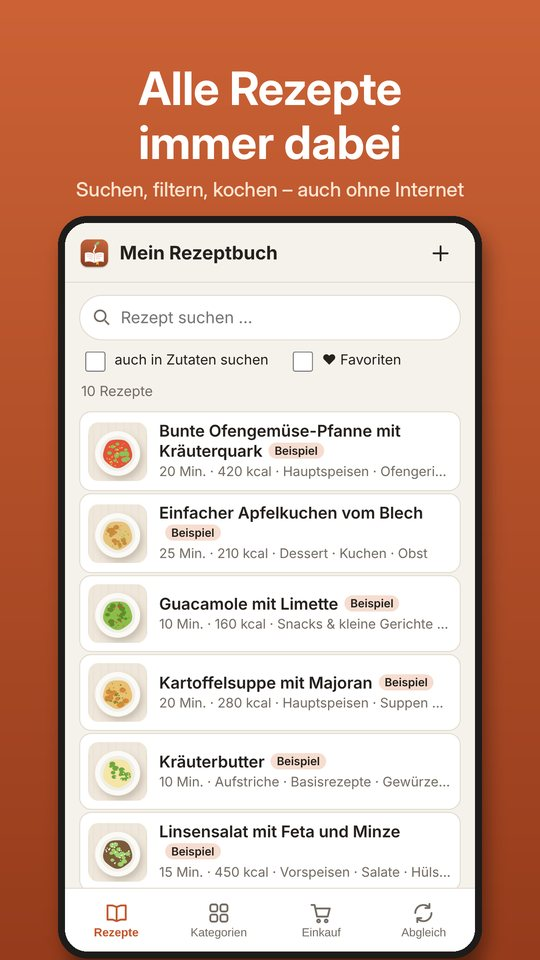
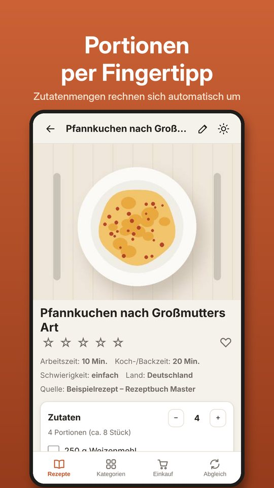
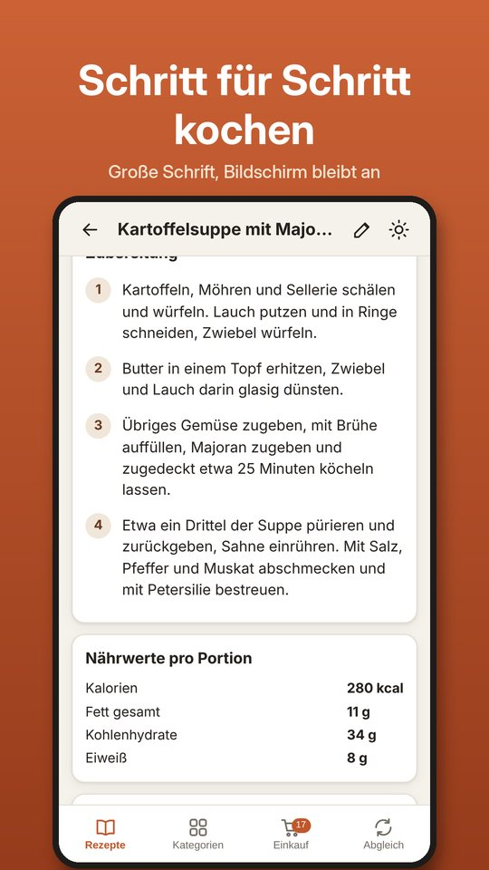
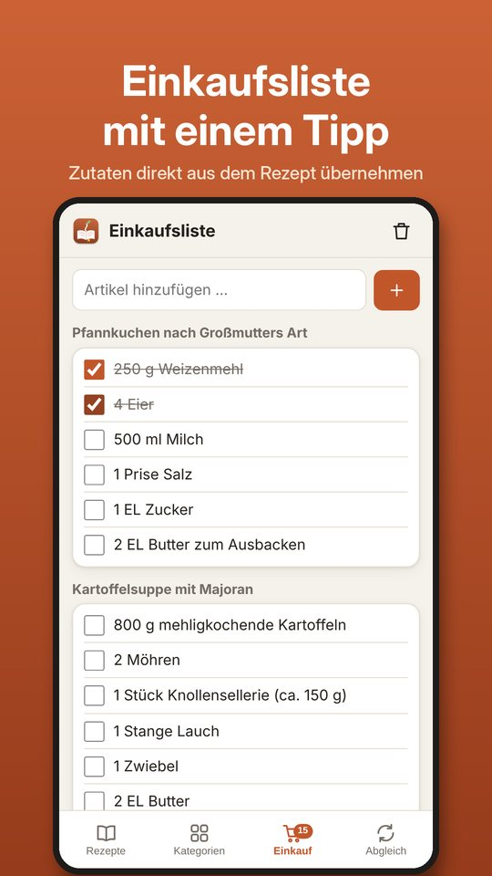
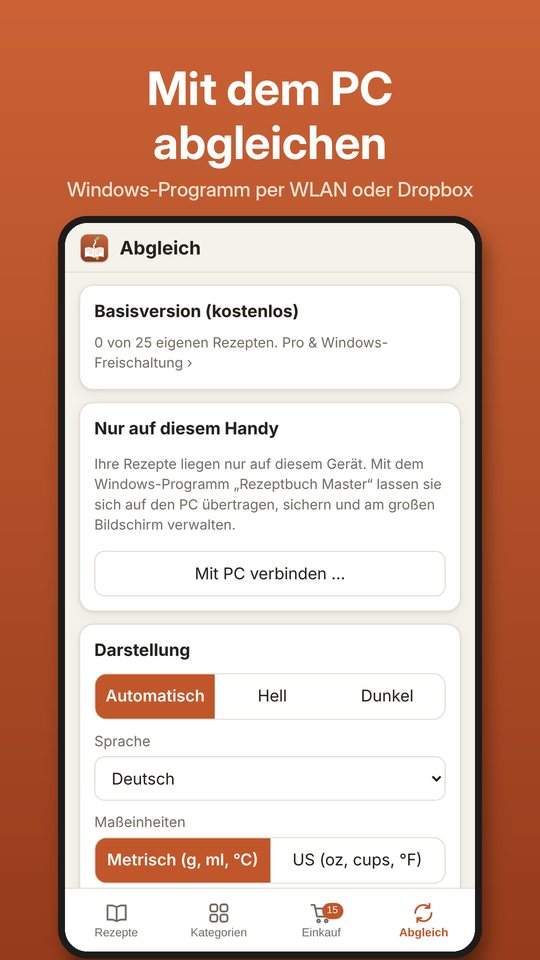
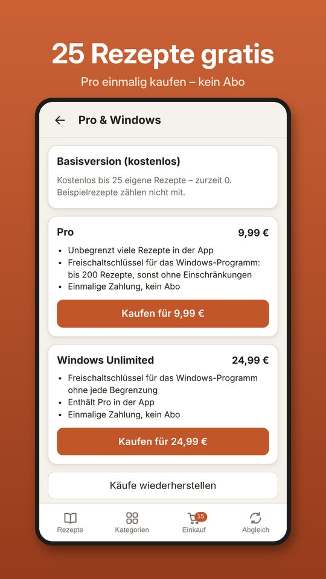
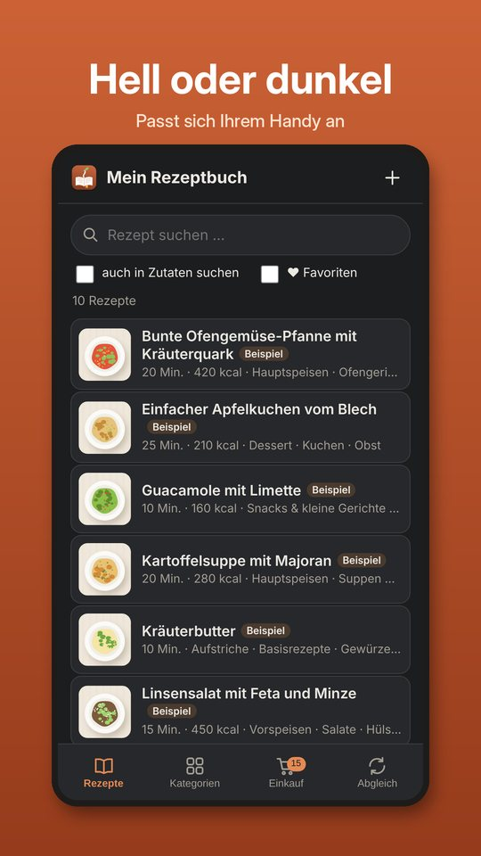
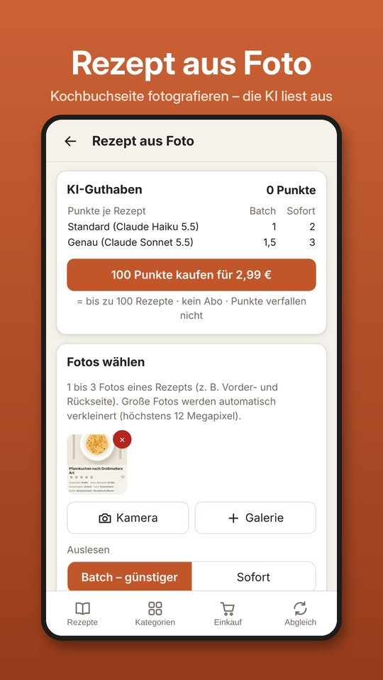

Rezeptbuch Master – Ihre Rezepte auf dem Handy und am Windows-PC
Rezepte sammeln, ordnen, suchen und Schritt für Schritt kochen: mit der Android-App unterwegs und mit dem Windows-Programm am großen Bildschirm. Ohne Konto, ohne Werbung, ohne Tracking – Ihre Rezepte bleiben auf Ihren Geräten.
Android-App bei Google PlayWindows-Programm herunterladen








Editionen
- App und Windows-Programm
- bis 25 eigene Rezepte
- 10 Beispielrezepte inklusive (zählen nicht mit)
- keine zeitliche Begrenzung
- App ohne Begrenzung
- Freischaltschlüssel für das Windows-Programm: bis 200 Rezepte, sonst ohne Einschränkungen
- kein Abo
- Freischaltschlüssel für das Windows-Programm ohne jede Begrenzung
- enthält Pro in der App
- kein Abo
- alles aus Windows Unlimited und Pro
- Allergene (EU-14) mit Kennzeichnung für die Speisekarte
- Ernährungsformen, Allergen-Suche und Baum „Allergenfrei von“
- Portionsrechner – am PC und in der App
- für Käufer von Windows Unlimited als günstiges Upgrade
- 100 Punkte für „Rezept aus Foto“
- bis zu 100 Rezepte (1 bis 3 Punkte je Rezept)
- Qualität „Standard“ oder „Genau“, sofort oder im Batch
- im Windows-Programm auch für Übersetzungen (0,5 Punkte je Rezept)
- Punkte verfallen nicht
Käufe sind ausschließlich in der Android-App über Google Play möglich. Den Windows-Schlüssel erzeugen Sie danach in der App unter „Abgleich“ › „Pro & Windows“ – oder senden ihn mit einem Tipp direkt an Ihren PC.
Funktionen
- Rezepte anlegen, mit Fotos
- Portionen umrechnen
- Einkaufsliste
- Kategorienbaum (Hauptkategorie › Bereich › Unterkategorie) und Suche
- Rezept aus Foto: Kochbuchseiten per KI auslesen
- Bildschirm bleibt beim Kochen an
- 9 Sprachen, metrische oder US-Maßeinheiten
- Abgleich mit dem PC im WLAN oder per Dropbox
- Rezepte von einer Webseite übernehmen (Adresse eingeben)
- Rezepte aus den Browser-Favoriten gesammelt einlesen – je Favorit nur diese eine Seite
- Oberfläche und Anleitung in 9 Sprachen
- Rezepte per KI in die eingestellte Sprache übersetzen, auch nachträglich für den ganzen Bestand; das Original bleibt erhalten
- Maßeinheiten metrisch oder US, automatisch umgerechnet
- Favoriten und eigene Sterne-Bewertung
- Massenbearbeitung: Kategorien, Quelle, Zeiten und Mengen für viele Rezepte auf einmal
- Import aus Dateien, Excel-Export
- Kochbücher als PDF
- Duplikaterkennung
- Allergene, Ernährungsformen und Portionsrechner (Ultimate)
- Backup
- Handy-Zugang mit eigenen Schlüsseln
Hilfe und Kontakt
Fragen, Probleme oder ein neuer PC? Schreiben Sie an rezeptbuch-master@t-online.de – bei Fragen zur Freischaltung bitte mit der Google-Play-Bestellnummer (GPA.…) und der Installations-ID des PCs.
Windows-Programm: Windows 10 oder 11 (64 Bit). Android-App: Android 7 oder neuer.